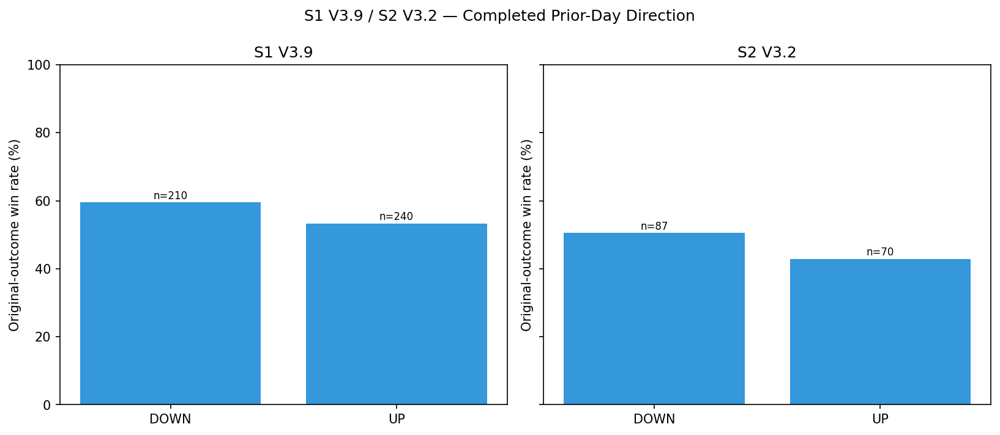

RS-XAUUSD-20260815-002 · XAUUSD · 2026-08-15
S1 V3.9 / S2 V3.2 — prior one/two completed daily bars
前一根、前兩根已經完全收完的 XAUUSD 日線是漲還是跌，會不會影響現在這筆 S1 V3.9 或 S2 V3.2 的結果？單獨看有沒有差別，跟前一篇的 30 分鐘進場確認合起來看又如何？
Headline Metrics 關鍵數字
Key Findings 重點發現
前一天收黑，之後的做多結果比較好
S1 在 D-1 收黑後勝率 59.52%（n=210），收紅後 53.33%（n=240）；S2 分別是 50.57%（n=87）與 42.86%（n=70）。兩個策略同向，但這比較像是「回檔後進場」的機會結構，而不是趨勢延續的因果關係。
這個方向性在最新 30% 的資料上仍然成立
驗證區 S1 收黑後 60.87%、收紅後 46.97%（69 筆對 66 筆）；S2 是 41.67% 對 25.0%（各 24 筆）。方向一致地重複出現了。但要注意 S2 驗證區整體只有 33.33%，日線脈絡並沒有把這個策略救回來。
S1 的「紅→黑」兩日序列是最穩定的一組
S1 UP→DOWN 全樣本 132 筆勝率 63.64%，而且前段 70%（63.83%）與最新 30%（63.16%）幾乎一模一樣。S2 沒有出現同樣穩定的兩日排序——它的 UP→DOWN 全樣本 47.83%、前段 58.62%、驗證區卻只剩 29.41%。
日線 × 盤中的交叉格子太小，不能當成硬性規則
S2 的交叉格子中有 10 格（共 12 格）樣本數低於 20。日線方向應該當成之後重跑回測時的脈絡條件，不要和 30 分鐘的百分比相乘，也不要當成二元開關。
Prior-Day Direction 前一日方向（全樣本）
兩個策略在前一天收黑之後的勝率都比較高，方向一致。但請對照信賴區間欄——兩組區間是重疊的，差距的方向可信，幅度則還不能當成定論。

S1 V3.9 — by D-1 Direction 依前一日方向（全樣本 450 筆，基準 56.22%）
| DOWN | 210 | 125 | 59.52 | [52.77, 65.93] | 2.178 |
|---|---|---|---|---|---|
| UP | 240 | 128 | 53.33 | [47.02, 59.54] | 1.632 |
S2 V3.2 — by D-1 Direction 依前一日方向（全樣本 157 筆，基準 47.13%）
S2 的方向與 S1 相同，差距 7.71 個百分點甚至略大於 S1 的 6.19，但樣本只有 S1 的三分之一，區間也更寬。
| DOWN | 87 | 44 | 50.57 | [40.27, 60.83] | 2.372 |
|---|---|---|---|---|---|
| UP | 70 | 30 | 42.86 | [31.94, 54.52] | 1.689 |
S1 V3.9 — Two-Day Sequence 兩日序列（D-2 → D-1，全樣本）
這張表是本篇最重要的一張：收黑的優勢幾乎全部來自「紅→黑」（63.64%，n=132）。「黑→黑」只有 52.56%，比 56.22% 的基準還低。所以有效的不是「前一天跌」，而是「漲勢中的一天回檔」。
| DOWN DOWN | 78 | 41 | 52.56 | [41.62, 63.26] | 1.828 |
|---|---|---|---|---|---|
| DOWN UP | 117 | 61 | 52.14 | [43.16, 60.98] | 1.487 |
| UP DOWN | 132 | 84 | 63.64 | [55.15, 71.35] | 2.444 |
| UP UP | 123 | 67 | 54.47 | [45.67, 63] | 1.778 |
S1 V3.9 — Holdout by D-1 Direction 驗證區前一日方向（2025-11-20 至 2026-07-10）
驗證區基準是 54.07%（n=135）。收黑後 60.87%、收紅後 46.97%，方向與全樣本一致——這是這份研究最有價值的地方：它在沒有被用來建立假設的資料上重複出現了。
| DOWN | 69 | 42 | 60.87 | [49.07, 71.52] | 2.499 |
|---|---|---|---|---|---|
| UP | 66 | 31 | 46.97 | [35.43, 58.84] | 1.305 |
S2 V3.2 — Holdout by D-1 Direction 驗證區前一日方向（2025-11-22 至 2026-07-07）
S2 的方向同樣保持（41.67% 對 25.0%），但驗證區整體基準已經掉到 33.33%（n=48）。日線脈絡只是把壞環境裡的相對排序保留下來，並沒有讓 S2 重新變得可用。
| DOWN | 24 | 10 | 41.67 | [24.47, 61.17] | 1.918 |
|---|---|---|---|---|---|
| UP | 24 | 6 | 25 | [12, 44.9] | 0.889 |
S1 V3.9 — D-1 × T+1 Interaction 日線方向 × 盤中確認（165 筆重疊交易）
把日線方向和前一篇的 T+1 確認交叉起來：最好的一格是「收黑且 T+1 守住低點」67.74%（n=62）。但注意跨欄比較——T+1 守住/跌破造成的差距（24.88 與 15.95 個百分點）明顯大於日線方向造成的差距（14.29 與 5.36 個百分點）。盤中確認做的工比日線脈絡多。
| DOWN|T1 BREAK | 21 | 9 | 42.86 | [24.47, 63.45] | 1.143 |
|---|---|---|---|---|---|
| DOWN|T1 HOLD | 62 | 42 | 67.74 | [55.37, 78.05] | 3.586 |
| UP|T1 BREAK | 24 | 9 | 37.5 | [21.16, 57.29] | 1.246 |
| UP|T1 HOLD | 58 | 31 | 53.45 | [40.8, 65.67] | 1.429 |
詮釋與實務意義
「前一天收黑比較好」這句話本身是對的，但它會誤導人，因為它不是均勻分布的。把 S1 的 D-1 收黑（59.52%、n=210）拆成兩日序列會看到：紅→黑是 63.64%（n=132），黑→黑卻只有 52.56%（n=78），比 56.22% 的基準還低。加權回去正好還原 59.52%，也就是說收黑的優勢幾乎完全由「紅→黑」這一格提供。真正被觀察到的不是「前一天跌」，而是「上升過程中的一天回檔」；連續兩天下跌反而沒有優勢。 第二件必須講清楚的是統計強度。這裡每一組對比的 95% 信賴區間都是重疊的——S1 收黑 [52.77, 65.93] 對收紅 [47.02, 59.54]，驗證區的 [49.07, 71.52] 對 [35.43, 58.84] 也一樣。任何單一比較都無法宣稱達到統計顯著。這份研究的價值不在單次差距的大小，而在於方向在獨立的時序驗證區重複出現、而且兩個策略同向；這是值得繼續追蹤的訊號，還不是可以下注的結論。 第三，把這篇和前一篇的 30 分鐘確認擺在一起看，會發現盤中確認做的工比日線脈絡多。在 S1 的交叉表裡，T+1 守住訊號低點與跌破之間的差距是 24.88 個百分點（收黑組）與 15.95 個百分點（收紅組）；而同樣在守住組內，日線收黑對收紅的差距只有 14.29 個百分點，跌破組內更只有 5.36 個百分點。兩者方向一致但強度不同，所以日線方向適合當排序或加減碼的脈絡，不適合當進場的開關。
限制與注意事項
- 日線脈絡是關聯性觀察，不是因果關係。
- D-1／D-2 序列與盤中交叉會產生小樣本格子，S2 V3.2 尤其嚴重——12 個交叉格子中有 10 格低於 n=20。
- 「日線收盤時間 +24 小時」的可用性規則是刻意保守的設定，目的是絕不使用尚未收完的日線。
- 本研究每一組對比的 95% 信賴區間都與其對照組重疊，方向一致但單一比較未達統計顯著。
- 交叉分析僅涵蓋能對應到 30 分鐘資料的交易（S1 165 筆、S2 65 筆），與日線分析的全樣本範圍不同。
- 任何日線脈絡結果都不會在沒有另外的採用決策之下改變即時訊號或正式策略規則。